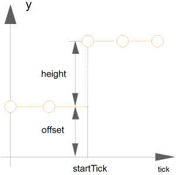

Package of signal source blocks generating clocked tick/sample based Integer signals
This package provides source components akin to the blocks provided in Modelica.Blocks.Sources, but with the difference that they provide
Extends from Modelica.Icons.SourcesPackage (Icon for packages containing sources).
| Name | Description |
|---|---|
| Step | Generate step signal of type Integer |
Generate step signal of type Integer
The Integer output y is a step signal. The signal is defined in terms of clock ticks instead of simulation time:

See model Modelica_Synchronous.Examples.Elementary.IntgerSignals.TickBasedStep.
Extends from Interfaces.PartialClockedSO (Block with clocked single output Integer signal).
| Name | Description |
|---|---|
| height | Height of step |
| offset | Offset of output signal y |
| startTick | Output y = offset for clock tick < startTick |
| Name | Description |
|---|---|
| y | Connector of clocked, Real output signal |